Projecten
Vergader App
Een app om meetings eenvoudig te plannen, en ruimtes te reserveren.
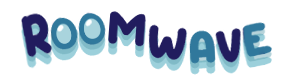
Windesheim Navigatie App
Een app om eenvoudig te navigeren in het Windesheim gebouw.
Portfolio van Youri Rodenburg, Student HBO-ICT UX/UI Designer. Hier vind je mijn projecten, vaardigheden en contactinformatie.
Een app om meetings eenvoudig te plannen, en ruimtes te reserveren.

Een app om eenvoudig te navigeren in het Windesheim gebouw.
Een applicatie om vergaderruimtes overzichtelijk te reserveren.
Mijn rol: UI/UX Designer en Documentator
Team: 6 Designers en Documentatoren
Tools: Figma, Word en Powerpoint
Medewerkers ervaren problemen bij het reserveren van vergaderruimtes doordat ruimtes vooraf worden gereserveerd maar uiteindelijk niet worden gebruikt. Het huidige systeem biedt geen real-time inzicht in daadwerkelijke bezetting, wat leidt tot frustratie en inefficiënt ruimtegebruik. Hoe kunnen we medewerkers helpen om sneller en eenvoudiger een beschikbare ruimte te vinden op basis van real-time data?
Binnen de middelgrote organisatie speelt er een probleem wat betreft het reserveren en het gebruik van de vergaderingsruimtes. Op dit moment wordt er een systeem gebruikt waarbij vooraf reserveringen gepland kunnen worden in de digitale agenda. Dit systeem biedt geen real-time inzicht over welke vergaderruimtes er daadwerkelijk worden gebruikt. Het kan namelijk voorkomen dat er bepaalde ruimtes worden gereserveerd, maar die leeg en beschikbaar zijn voor andere medewerkers. Dit kan medewerkers frustreren en zorgen voor inefficiënt gebruik van de kantoorruimtes.
Volgens medewerkers van de organisatie is het grootste probleem het gebrek aan actuele informatie over de beschikbaarheid en het vertrouwen in of de reserveringen kloppen. Er wordt ook aangegeven dat er behoefte is aan een eenvoudige mobiele oplossing die de beschikbare ruimtes in real-time laat zien.
Een gefrustreerde facilitair manager die veel klachten krijgt over onbenutten vergaderruimtes. Ze moet een goede manier vinden om de reservatie van werkplekken slimmer en technischer op te zeten zodat deze klachten te verhelpen voor haar werknemers.
De medewerker ervaart irritatie doordat ruimtes gereserveerd worden maar niet gebruikt worden (no-shows zijn), er last-minute geen beschikbare ruimte te vinden is, of een gereserveerde ruimte toch bezet blijkt. Het huidige reserveringssysteem voelt onduidelijk en omslachtig. Hij heeft behoefte aan een overzichtelijk, betrouwbaar en flexibel systeem waarin tijdelijk reserveren mogelijk is en beschikbare ruimtes in real-time zichtbaar zijn.
De doelgroep bestaat uit medewerkers van een middelgroot bedrijf die regelmatig gebruik maken van vergaderruimtes en behoefte hebben aan een snelle en eenvoudige manier om beschikbare ruimtes te vinden. En facilitair managers.
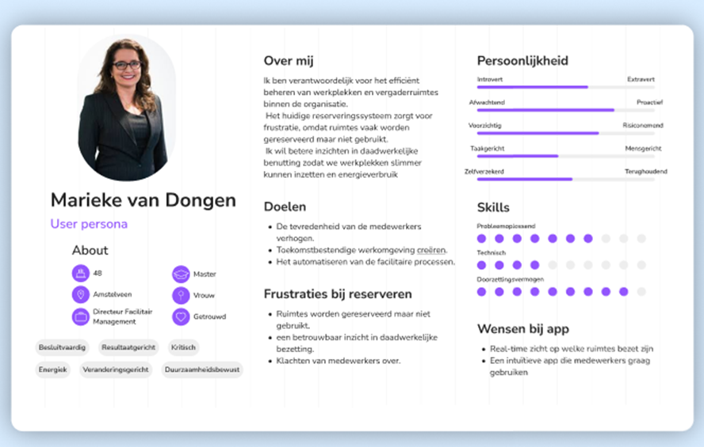
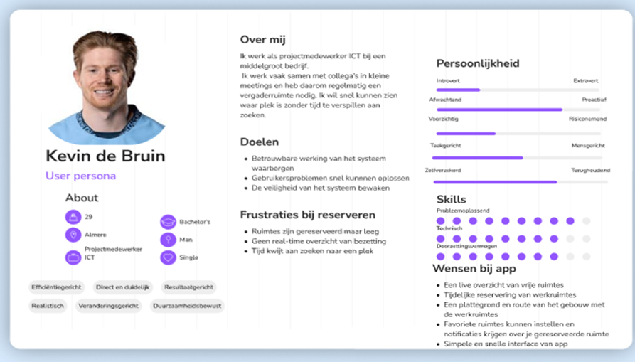
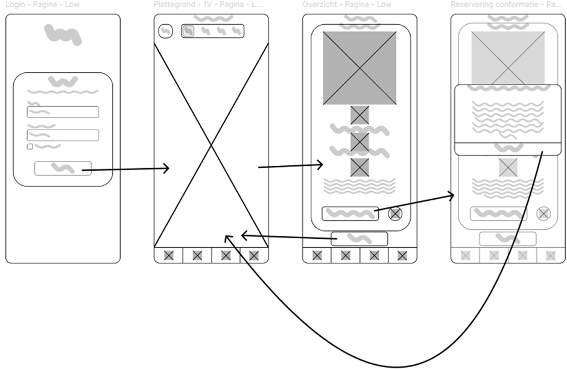
Deze userflow beschrijft de primaire taak van de applicatie: het reserveren van een vergaderruimte.
De flow start bij het inloggen en eindigt bij de reserveringsbevestiging.
De flow is bewust lineair ontworpen om cognitieve belasting te minimaliseren. De gebruiker doorloopt een beperkt aantal stappen:
De primaire actie (“Reserveren”) is visueel dominant geplaatst om taakgericht gebruik te stimuleren.
De navigatie blijft consistent beschikbaar via de Bottom navigation, waardoor de gebruiker altijd controle behoudt.
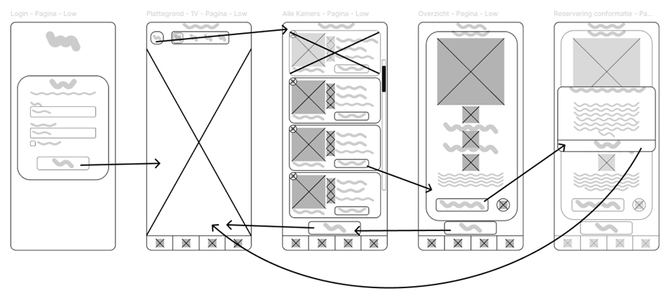
Deze alternatieve flow biedt gebruikers een lijstweergave van alle kamers. Dit ondersteunt verschillende gebruikersvoorkeuren: sommige gebruikers navigeren liever via visuele plattegronden, anderen via een gestructureerde lijst. Door meerdere navigatiepaden aan te bieden wordt flexibiliteit verhoogd en wordt de efficiëntie voor terugkerende gebruikers verbeterd.
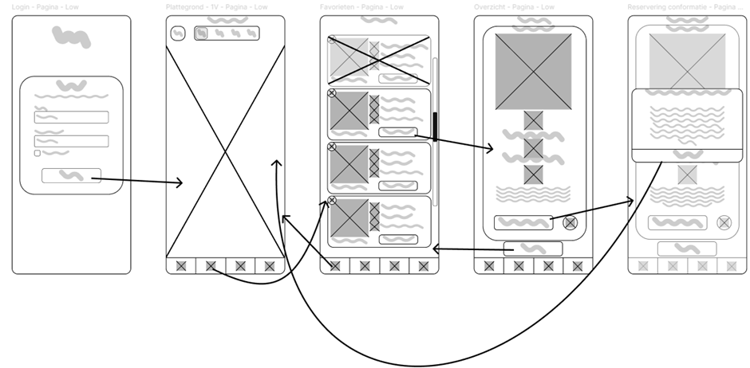
De favorietenflow ondersteunt efficiënt hergebruik. Gebruikers kunnen eerder gekozen ruimtes snel terugvinden en reserveren zonder opnieuw te navigeren via de plattegrond. Dit sluit aan bij het usability-principe Flexibility & Efficiency of Use. De interactiestappen worden verminderd voor ervaren gebruikers.
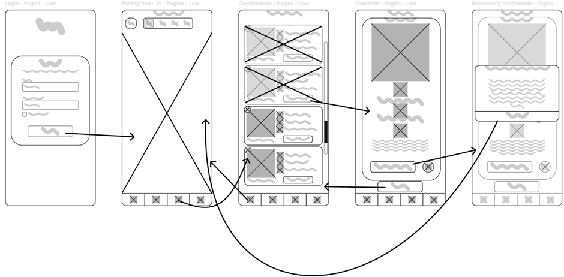
De geschiedenisflow geeft gebruikers inzicht in eerdere reserveringen. Dit vergroot transparantie en ondersteunt controle over eigen boekingen. De structuur is overzichtelijk en chronologisch opgebouwd om snelle herkenning mogelijk te maken.
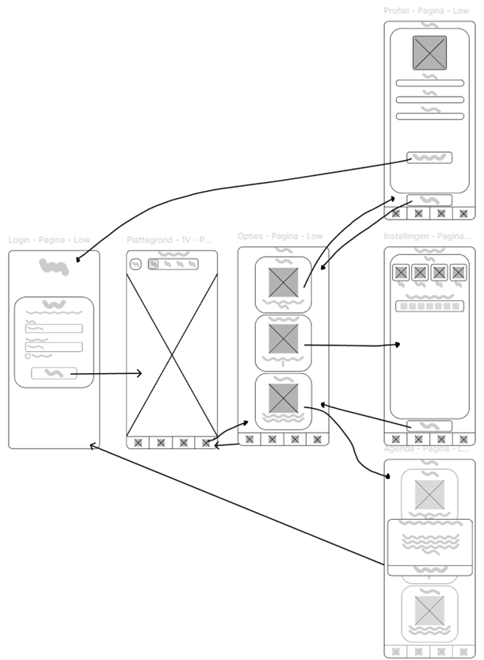
De optie flow groepeert secundaire functionaliteiten zoals profiel, instellingen en agenda. Door deze functies los te koppelen van de primaire reserveringsflow blijft de kernfunctionaliteit overzichtelijk. Dit voorkomt visuele overbelasting en ondersteunt een duidelijke informatie-architectuur.
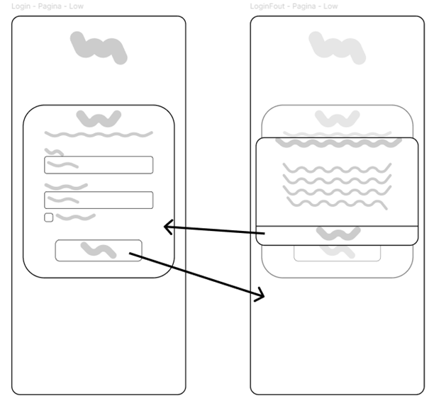
Deze flow beschrijft foutafhandeling bij onjuiste inloggegevens.
Er is gekozen voor:
Dit ondersteunt het principe Help users recognize, diagnose and recovery from errors.
Door de unhappy path expliciet uit te werken wordt aangetoond dat edge cases zijn meegenomen in het ontwerp.
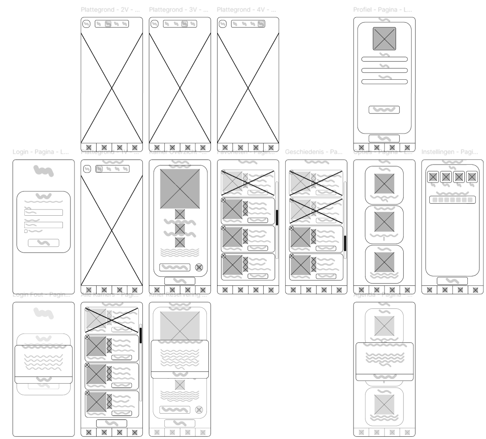
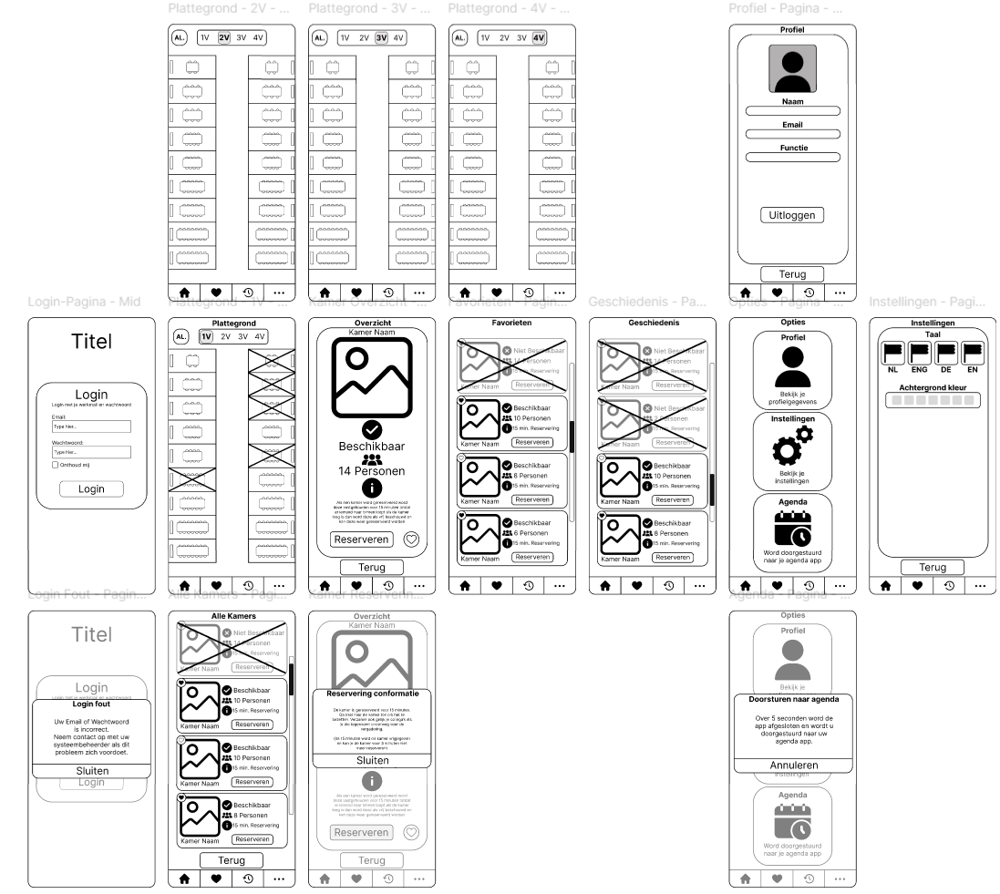
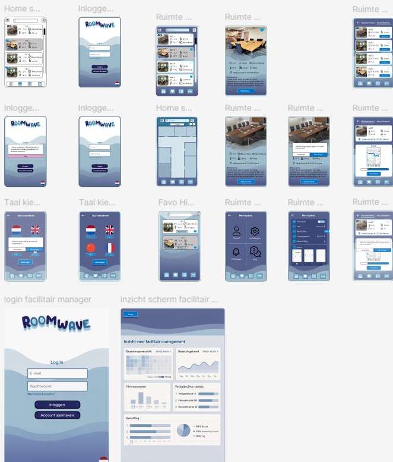
De interface is opgebouwd uit herbruikbare UI-componenten zoals knoppen, navigatiebalken, kaarten voor ruimtes, formulieren en iconen. Door gebruik te maken van consistente componenten blijft het ontwerp overzichtelijk en herkenbaar voor de gebruiker. Dit zorgt voor een betere usability en maakt het ontwerp makkelijker schaalbaar en aanpasbaar.
Binnen het ontwerp zijn verschillende interaction states toegepast, zoals hover, active, selected en error states bij formulieren. Deze states geven visuele feedback wanneer een gebruiker interactie heeft met een element. Hierdoor begrijpt de gebruiker beter wat er gebeurt binnen de interface en wordt de UX verbeterd.
Bij het ontwerp is rekening gehouden met accessibility, zoals voldoende kleurcontrast, duidelijke typografie en eenvoudige navigatie. Hierdoor blijft de interface goed leesbaar en bruikbaar voor een brede groep gebruikers, ook op verschillende apparaten en schermgroottes.
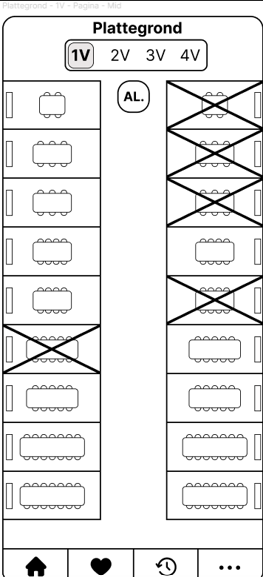
Voor deze test heb ik een student gevraagd om mijn wireframes te testen. Dat bij de home page een knop in het midden stond waarmee je het overzicht opende van alle kamers die heb ik toen verplaatst voor snelle duimnavigatie.
Hierboven de oude wireframe en hieronder de nieuwe.
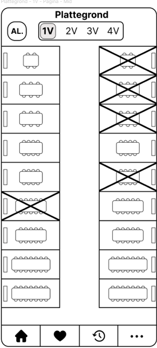
Tijdens dit project heb ik geleerd hoe belangrijk gebruikersfeedback is voor het verbeteren van UI en UX. Door feedback te verwerken kon ik mijn ontwerpen blijven aanpassen en verbeteren. Ook heb ik geleerd om mijn designkeuzes te onderbouwen met UX-principes. Daarnaast heb ik in teamverband gewerkt. De samenwerking verliep goed en we gaven elkaar regelmatig feedback. Door goed te communiceren kwamen we samen tot oplossingen. Omdat het een groot project was, heb ik veel UI-principes geleerd en toegepast in mijn wireframes.
Een applicatie om de snelste routes te vinden binnen het Windesheim campus.
Mijn rol: Documentator en Codeur
Team: 6 documentatoren, 3 codeurs, 3 designers
Tools: Figma, Word en Visual Studio Code
Nieuwe studenten op de Windesheim campus hebben vaak moeite om hun weg te vinden tussen gebouwen, verdiepingen en lokalen. Hierdoor kunnen studenten te laat komen bij lessen en ervaren zij stress of onzekerheid over of zij op de juiste plek zijn.
Nieuwe studenten op de Windesheim campus hebben vaak moeite om hun weg te vinden tussen gebouwen, verdiepingen en lokalen. Hierdoor kunnen studenten te laat komen bij lessen en ervaren zij stress of onzekerheid over of zij op de juiste plek zijn. Vooral eerstejaars studenten, internationale studenten en bezoekers hebben moeite met het begrijpen van de campusstructuur. De huidige informatievoorziening maakt het niet altijd duidelijk waar iemand zich bevindt of hoe snel een bepaalde locatie bereikt kan worden. Er bestaan al navigatie-oplossingen zoals CampusNav, maar deze zijn niet specifiek ontworpen voor de Windesheim campus en houden vaak geen rekening met context zoals tijdsdruk, drukte of toegankelijkheid. Daarom willen wij een digitale oplossing ontwerpen die studenten helpt om snel, duidelijk en stressvrij hun bestemming op de campus te vinden.
Eerste jaars studente Communicatie uit Amersfoort. Een compleet nieuwe student op campus kent daarom de gebouwen niet al te goed. Ze is al een paar keer te laat gekomen hierdoor en is daar best gefrustreerd over.
Een uitwisselings student uit Tokyo met een slechte beheersing over de Nederlandse taal. Ze kent de weg op campus helemaal niet en kan moeilijk rond navigeren met de taal barriere. Ze is ook best eigenwijs ingesteld en wilt niet zomaar om hulp vragen.
De doelgroep bestaat uit studenten van de Windesheim campus, met name nieuwe studenten en internationale studenten.
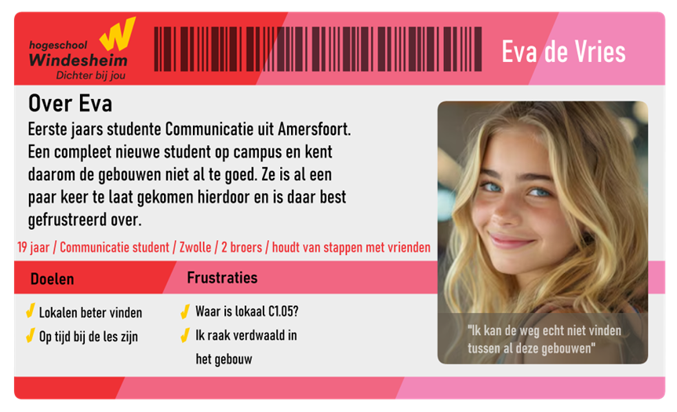
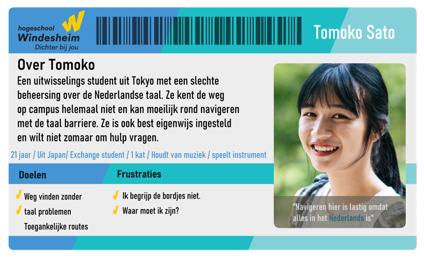
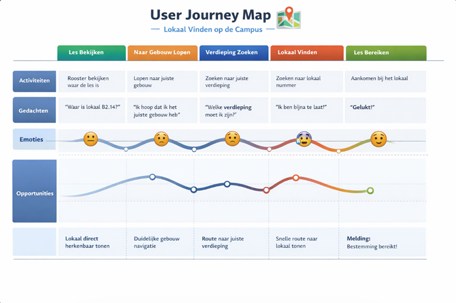
De UI moet WCAG-proof zijn, door gebruik van contrast, focus, labels en error statussen.
Gebruik maken van consistente UI-patterns voor navigatie, kaarten en lijsten.
Toepassen van heldere feedback bij acties, zoals hovers, taps, laden en bevestigen.
Een eenvoudig mentaal model en helder navigatieconcept toepassen, zodat de gebruiker altijd een antwoord weet op de vraag “Waar ben ik?” of “Waar ga ik heen?”
Het ontwerp moet getest zijn met 3 tot 5 echte gebruikers, met voorkeur eerstejaars.
Start -> Gebruiker kiest "Waar moet je zijn?" -> Gebruiker kiest gebouw -> Gebruiker kiest verdieping -> Gebruiker kiest lokaal App toont route naar lokaal
Start -> App detecteert dat een les bijna begint -> App toont melding -> "Je les begint over 8 minuten" -> App stelt snelle route voor
Start -> Gebruiker activeert toegankelijkheidsmodus -> Interface verandert naar:
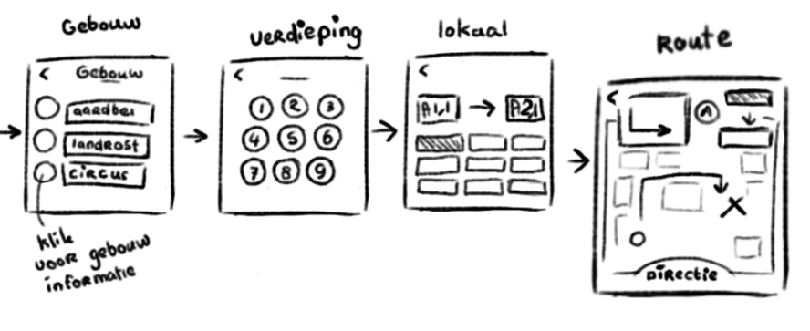
Gebouw -> verdieping -> lokaal:
Slimme context-hints: Notificaties met suggesties op basis van tijd, drukte en toegankelijkheid op dit moment (bijv. “les begint over 8 minuten”, “druk bij koffiecorner” of “de lift is bezet”).
Micro-focused screens: Schermen mogen slechts één keuze of taak tonen per stap.
Toegankelijkheidsmodus: Speciale modus die zorgt voor grote knoppen, verhoogd kleurcontrast, icon-only/tekst-only opties en wegwijzers met pictogrammen.
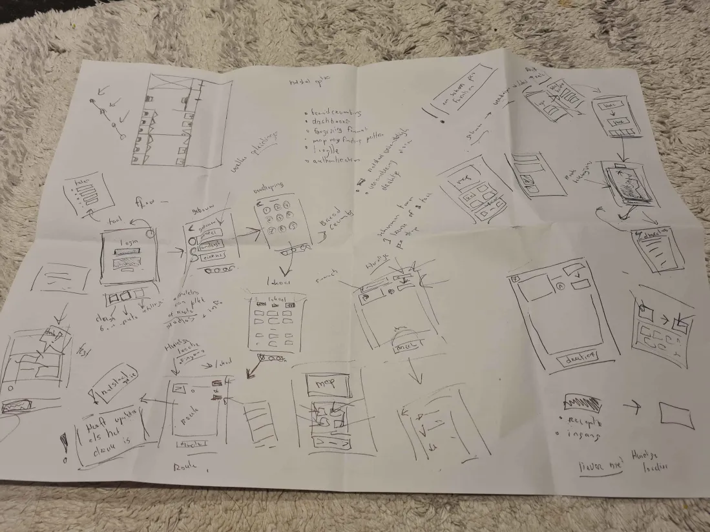
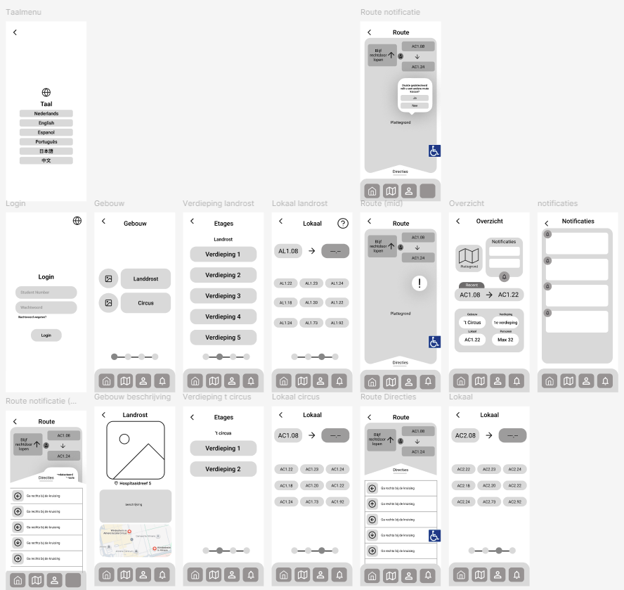
Door alle etages naast elkaar te tonen kunnen gebruikers snel een overzicht krijgen van de beschikbare routes en opties. Dit ondersteunt snelle beslissingen en vermindert het aantal stappen dat nodig is om een route te vinden.
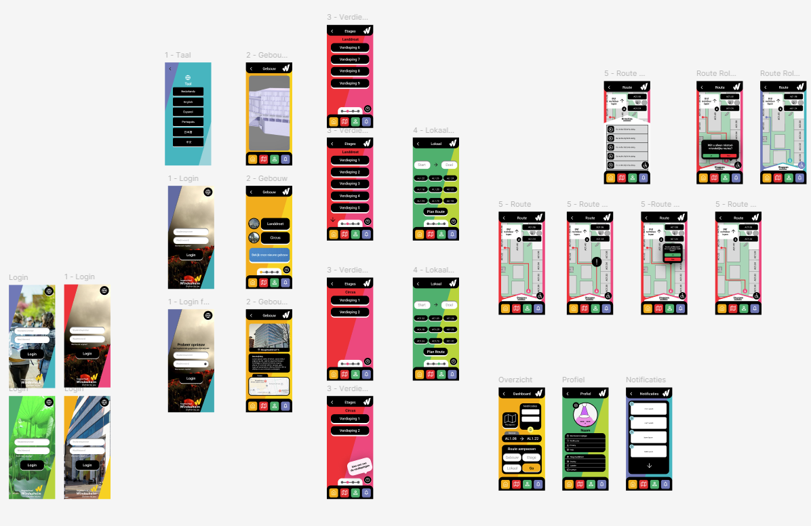
De interface is opgebouwd uit herbruikbare UI-componenten zoals knoppen, navigatiebalken, kaarten voor ruimtes, formulieren en iconen. Door gebruik te maken van consistente componenten blijft het ontwerp overzichtelijk en herkenbaar voor de gebruiker. Dit zorgt voor een betere usability en maakt het ontwerp makkelijker schaalbaar en aanpasbaar.
Binnen het ontwerp zijn verschillende interaction states toegepast, zoals hover, active, selected en error states bij formulieren. Deze states geven visuele feedback wanneer een gebruiker interactie heeft met een element. Hierdoor begrijpt de gebruiker beter wat er gebeurt binnen de interface en wordt de UX verbeterd.
Bij het ontwerp is rekening gehouden met accessibility, zoals voldoende kleurcontrast, duidelijke typografie en eenvoudige navigatie. Hierdoor blijft de interface goed leesbaar en bruikbaar voor een brede groep gebruikers, ook op verschillende apparaten en schermgroottes.
Tijdens dit project heb ik geleerd hoe leuk het is om meerdere schermen te coderen en te zien hoe onze ontwerpen tot leven komen. Ook heb ik geleerd om mijn designkeuzes te onderbouwen met UX-principes. De samenwerking verliep goed en we gaven elkaar regelmatig feedback. Door goed te communiceren kwamen we samen tot oplossingen.
Ik ben een HBO-ICT student met interesse in UX design en front-end development. Mijn focus ligt op het ontwerpen van gebruiksvriendelijke interfaces. Ik ben 20 jaar oud en woon in Almere. In mijn vrije tijd ben ik graag met me vrienden weg, luister veel muziek en lees wel eens boeken. Ik ben altijd op zoek naar nieuwe uitdagingen en kansen om mijn vaardigheden te verbeteren. Ik ben een leergierig en enthousiaste persoon die graag samenwerkt in een team en openstaat voor feedback.